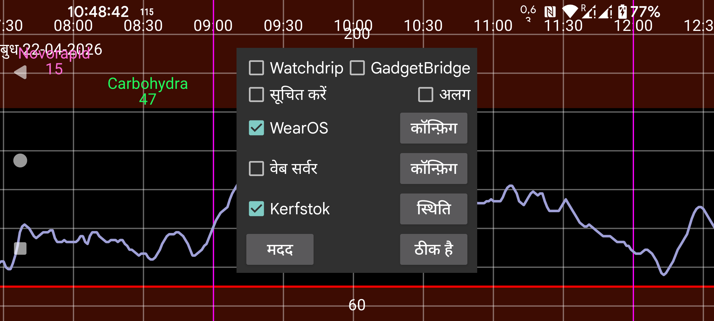

ar be de es fr hi it ja nl pl pt ru tr uk uz zh en
वर्तमान में, Juggluco के पास आपकी घड़ी पर ग्लूकोज मान पाने के छह तरीके हैं।
जब सूचित करें चालू होता है, तो हर बार एक नया ग्लूकोज मान आने पर एक Android सूचना बनाई जाती है। कुछ घड़ियों पर सूचनाएं केवल तब घड़ी को भेजी जाती हैं जब एक नई सूचना बनाई जाती है, उनके लिए आपको अलग चालू करना होगा। इन घड़ियों के लिए आपको घड़ी पर अलार्म सूचनाएं प्राप्त करने के लिए अलग भी चालू करना होगा।
इसे चालू करके, Juggluco Watchdrip+ को ग्लूकोज मान भेजता है। Watchdrip+ MiBand/Amazfit घड़ियों को वॉच फेस भेजता है, जो ग्लूकोज मान दिखाते हैं।
GadgetBridge MiBand/Amazfit घड़ियों पर मौसम की जानकारी प्रदर्शित करना संभव बनाता है। Gadgetbridge विकल्प चालू होने पर, Juggluco GadgetBridge को इस बहाने से ग्लूकोज मान भेजेगा कि यह मौसम की जानकारी है। इसका Watchdrip से अधिक लाभ था कि यह बहुत तेज़ है, पर नुकसान यह है कि कम जानकारी प्रदर्शित होती है। Juggluco ग्लूकोज मान और एक दिशा तीर को मौसम के स्थान पर रखता है। यह स्थान घड़ी पर Weather के तहत प्रदर्शित होता है। मुझे कोई वॉच फेस नहीं मिला जो इस स्थान को प्रदर्शित करे। केवल mmol/L के लिए: बिंदु से पहले का मान अधिकतम तापमान में और बिंदु के बाद का मान न्यूनतम तापमान में रखा जाता है। mg/dL के मान तापमान के लिए बहुत बड़े हैं, इस कारण अंतिम अंक न्यूनतम तापमान में और अंतिम अंक से पहले की संख्याएं अधिकतम तापमान में रखी जाती हैं। इस प्रकार 106 mg/dL बन जाता है: अधिकतम तापमान 10, न्यूनतम तापमान 6।
परिवर्तन की दिशा मौसम आइकन निर्धारित करती है: बर्फ गिरता ग्लूकोज है, बारिश बढ़ता ग्लूकोज है। इसे वर्तमान तापमान में भी रखा जाता है। शून्य से बड़ा का मतलब बढ़ता ग्लूकोज, शून्य से कम का मतलब गिरता ग्लूकोज।
Kerfstok एक वॉच ऐप है जिसके द्वारा आप संख्याएं (जैसे इंसुलिन खुराक) दर्ज कर सकते हैं, पर यह वर्तमान ग्लूकोज मान भी प्रदर्शित करता है। नया ग्लूकोज मान आते ही, Juggluco इसे Kerfstok को भेजता है। तो Kerfstok हमेशा सबसे हाल का ग्लूकोज मान प्रदर्शित करता है। Kerfstok Garmin द्वारा समर्थित सभी गतिविधियों को रिकॉर्ड कर सकता है और गति और दूरी प्रदर्शित कर सकता है। देखें घड़ी->Kerfstok स्थिति-> मदद और https://www.juggluco.nl/Kerfstok
ऐप्स Juggluco द्वारा भेजे गए ग्लूकोज ब्रॉडकास्टों में से एक से ग्लूकोज मान प्राप्त कर सकते हैं और इन ग्लूकोज मानों को एक घड़ी को भेज सकते हैं। उदाहरण के लिए G-Watch (TizenOS या WearOS) Glucodata Broadcast से ग्लूकोज मान प्राप्त कर सकता है (देखें बायां मेन्यू->सेटिंग्स->डेटा आदान-प्रदान)।
Juggluco में एक xDrip/Nightscout वेबसर्वर शामिल है। यह Juggluco के साथ xDrip वॉच ऐप्स का सीधे उपयोग करना संभव बनाता है। xDrip एक नया ग्लूकोज मान केवल हर 5 मिनट में प्रदर्शित करता है, जबकि Juggluco हर मिनट एक नया ग्लूकोज मान प्रदर्शित करता है। Juggluco xDrip वॉच ऐप्स को भी सबसे हाल का ग्लूकोज मान भेजता है। ग्लूकोज मान केवल तब घड़ियों को भेजे जाते हैं यदि वॉच ऐप उनके लिए पूछता है, इस प्रकार प्रदर्शित मान कितने पुराने हैं यह इस पर निर्भर करता है कि वॉच ऐप उनके लिए कब पूछता है। उदाहरण के लिए Garmin घड़ियों पर वॉच फेस और डेटा फ़ील्ड केवल हर 5 मिनट में एक ग्लूकोज मान के लिए पूछते हैं। xDrip के माध्यम से यह अक्सर 10 मिनट पुराने ग्लूकोज मान देता था। जब सीधे Juggluco से जुड़े होते हैं, तो ये वॉच फेस 6 मिनट तक पुराने ग्लूकोज मान दिखाते हैं। Garmin के तहत, यदि आप Kerfstok का उपयोग नहीं कर सकते, तो एक हाल का ग्लूकोज मान नियमित रूप से प्राप्त करने के लिए आपके पास निम्नलिखित विकल्प हैं। एक xDrip विजेट (https://apps.garmin.com/hi-IN/apps/73115e04-dc9f-4765-ad88-e7ae283ce995) का उपयोग एक गतिविधि रिकॉर्ड करते समय भी किया जा सकता है। तो यदि आपके पास एक खाली हाथ है, तो आप एक मानक Garmin स्पोर्ट ऐप के साथ एक गतिविधि रिकॉर्ड करते समय इस xDrip विजेट पर स्विच कर सकते हैं। एक xDrip स्पोर्ट ऐप भी है जो अपने ग्लूकोज मान को नियमित रूप से अपडेट करता है: https://apps.garmin.com/hi-IN/apps/aaf6533b-bca1-4365-9131-9f882f6f148c. आप एक ऐसे क्षण पर शुरू करने का प्रयास कर सकते हैं, ताकि यह एक ग्लूकोज मान के उपलब्ध होने के तुरंत बाद अनुरोध करे। डेटा फ़ील्ड और वॉच फेस आदर्श समाधान होंगे, पर Garmin द्वारा लगाए गए प्रतिबंध उन्हें बहुत कम मूल्य का बनाते हैं।
पहले आप Fitbit के लिए एक वॉच फेस के साथ Juggluco में वेब सर्वर का उपयोग कर सकते थे: https://glancewatchface.com । 2024 के मध्य से Fitbit घड़ियों पर तृतीय-पक्ष ऐप्स की अनुमति नहीं है: https://www.techradar.com/health-fitness/fitbit-watches-in-the-eu-will-lose-third-party-apps-and-watch-faces-heres-why । EU विनियमन को इस निर्णय को उकसाना चाहिए था। शायद Wear OS पर वैकल्पिक ऐप स्टोर की अनुमति देने की संभावित आवश्यकता: तृतीय-पक्ष ऐप्स के बिना सरल फिटनेस ट्रैकर भी अनुमति हैं और हम वह बन सकते हैं। कुछ लोग दावा करते हैं कि VPN के उपयोग के साथ USA में स्थान बदलने के बाद, वे फिर से तृतीय-पक्ष ऐप्स इंस्टॉल कर सकते हैं।
वेब सर्वर इंटरफ़ेस के बारे में अधिक जानकारी के लिए https://www.juggluco.nl/Juggluco/webserver.html देखें
Juggluco का एक संस्करण Wear OS पर पोर्ट किया गया है। डिस्प्ले छोटी स्क्रीन के अनुकूल है और एक वॉच फेस जोड़ा गया है। वॉच फेस को एक सामान्य Wear OS वॉच फेस के रूप में इंस्टॉल किया जा सकता है और समय के अलावा ब्लूटूथ के माध्यम से प्राप्त वर्तमान ग्लूकोज मान भी प्रदर्शित करता है।